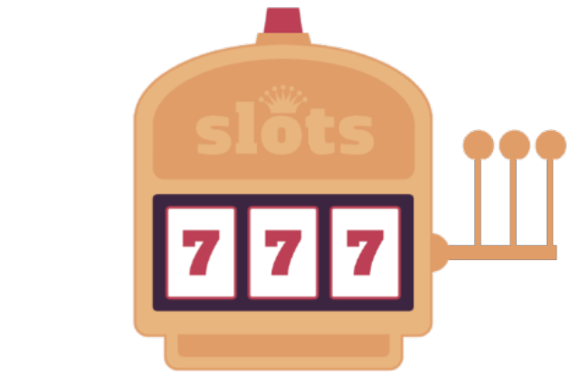
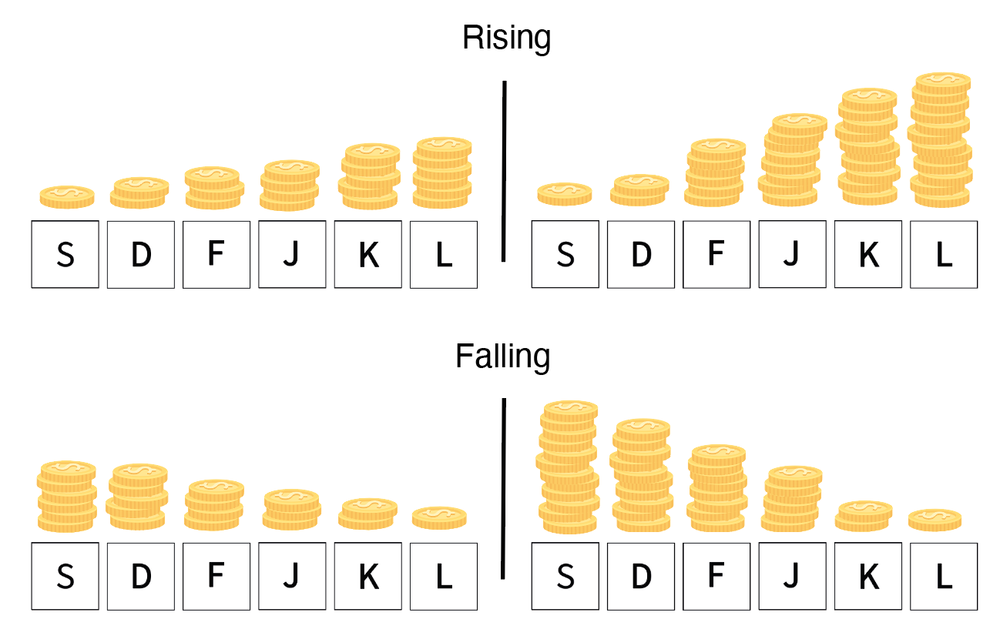

By Rabe! - Own work, CC BY-SA 3.0, Source
Your job will be to play an easy and fun game that we call Bandit City!
To be eligible to participate, you MUST meet the following criteria:
Be 18 years of age or older.
Be a fluent speaker of English.
Have not previously participated in this experiment.
Please use a device with a keyboard.
Please do not accept this task if you are using a touch screen device, it will not work!
How much time will it take and how much can you earn?
The study will take 20-30 minutes.
You will be paid £2 pounds for participation plus a bonus of up to £2.5 pounds depending on your performance.
Confidentiality
Your participation in this study will remain confidential.
Your Prolific ID will NOT be shared with anyone outside the research team.
Participation and withdrawal
Your participation in this study is completely voluntary and you may refuse to participate
or you may choose to withdraw at any time.
However, you will only be paid for the participation upon completion
and if you enter the correct completion code provided at the end of the study.
How to contact the researchers?
If you have questions or concerns about your participation or payment
or want to request a summary of research findings,
please email the researcher
or the principal investigator (Dr. Eric Schulz).
Data protection
Your data will be anonymized and only used in the manner described in our data protection sheet,
available here
(please do not fill out this sheet!).
The following text box summarizes the main points. Please read it carefully and provide consent below:
By selecting the consent option below,
you acknowledge that you fulfill all of the participation criteria
and you agree to your data being used as described.
Today, you are going to be a gambler visiting the fictional town of Bandit City, BC in short.
Bandit City is the place to be if you wish to immerse yourself in the world of gambling.
Like any major gambling city, Bandit City has several casinos lined up next to one another.
As an experienced gambler, you like to visit all the casinos whenever you are in town and make some money.
Local News!

To promote local businesses, casinos in Bandit City only buy slot machines from their local manufactures.
So all casinos now have two slot machines, one each from Green Geeks and Blue Lagoons.
Let us take a look at these machines.
Slot Machines 2.0
Each slot machine has several options that you can choose from to earn BC coins.
Each option maps on to different keys on your keyboard.
You can choose an option by pressing the corresponding key on your keyboard.
The color of the options indicates which company made the slot machine.
It will be green if made by Green Geeks as shown below:
or blue if made by Blue Lagoons as shown below:
When you have made a choice, the key you pressed becomes bold and the amount of BC coins you won will appear on the screen.
Slot Machines 2.0
The number of BC coins you can get is different for the different keys of the slot machine.
You have 5 chances for each slot machine and your goal is to win as many BC coins as possible.
The earlier you find the most lucrative option, the more BC coins you can earn by repeatedly pressing it.
Given your enthusiasm, you tend to play all available slot machines in a casino before moving to the next casino.
You will be told what percent of the maximum possible coins you earned after every casino so that you know how well you are doing.
You will exchange all the BC coins you earned across casinos for real money at the end of your adventure.
Shh....!
During his visit to Bandit City last weekend, a friend of yours had an insight.
As he went from casino to casino, he noticed that slot machines from the same company behaved somewhat similarly.
He realized that the coins he could earn from the different options followed a certain pattern.
The pattern was similar amongst machines produced by the same company and each company had its own distinct pattern.
Hmm...but what patterns?
One company showed a...
Rising/Falling Pattern
He could either get more coins as he went from key S to L (Rising; top row) or fewer coins as he went from key S to L (Falling; bottom row).

A machine from a company following rising/falling pattern could be rising in one casino and falling in the other.
The amount of rise or fall may vary from casino to casino.
The other company showed an...
Alternating Pattern
He saw that every other option was highly rewarding so either keys (S, F, K; top row) or (D, J, L; bottom row) could be more rewarding.
A machine from a company following the alternating pattern can either have options (S, F, K) or (D, J, L) to be highly rewarding.
The magnitude of the highly rewarding option may vary from casino to casino.
Your mission
Unfortunately, your buddy went a little out of control that night - what happens in Bandit City stays in Bandit City!
Now, he only remembers the patterns but does not recollect which company produces which pattern.
The good news is that if you can figure this out, you can earn a lot of coins and leave Bandit City a rich person.
Note that a company either only produces rising/falling machines, or it only produces alternating machines.
Oh wait!
The casino owners recently noticed that a lot of people were doing well on the new slot machines.
They now want to challenge their visitors.
So, once you finish playing against the two slot machines, they will connect the machines together and ask you to play against the connected slot machine.
The machines are connected such that it has blocks of three keys (either SDF or JKL) from previously played slot machines.
Three options for such a connected machine will be green and the remaining in blue indicating the slot machine they are from.
They can be connected in one of the two orders as shown below.
The coins for an option is expected to be roughly equal to that of the same colored option previously seen in the casino.
Essentially, you will be playing three slot machines (green, blue, and connected green-blue) in each casino today.
Before you start, here is a quick tutorial to get you upto speed!
Connected Machine
Imagine you enter a casino and start playing against the first slot machine.
This machine could be either from Blue Lagoons or Green Geeks. In this casino, the first slot machine was made by Blue Lagoons.
Let us say, you picked option D on one of the trials and got 8.1 coins as shown below.
Once you finish five trials on the first slot machine, you move to the second slot machine in the same casino.
The second slot machine is made by the other company, Green Geeks in this case.
On this slot machine, assume you got 4.3 coins from option K on one of the trials as shown below.
After playing your quota of trials on the second machine, the owners would connect the two slot machines together.
The connected machine has blocks of three keys each from the first and the second slot machine as indicated by their color (shown below).
If you pick option D in blue, you get roughly the same number of coins as option D on the blue slot machine.
Similarly, choosing option K in green yields roughly the same number of coins as option on K the green slot machine.
So, if you can figure out the patterns in the two slot machines in a casino, you would know the pattern for the connected slot machine.
You can actually pick the most lucrative arm from the first trail onwards for these connected slot machines.
Oh wait!
The casino owners recently noticed that a lot of people were doing well on the new slot machines.
They now want to challenge their visitors.
So, they connected the machines together and asked people to play only against the connected slot machine instead.
The machines are connected such that it has blocks of three keys (either SDF or JKL) from the two slot machines in the casino.
Three options for such a connected machine will be green and the remaining in blue indicating the slot machine they are from.
They can be connected in one of the two orders as shown below.
The coins for an option of a specific color is equal to that you could have earned from the same colored slot machine in the casino.
Essentially, you will be playing only one slot machine (connected green-blue) in each casino today.
Hope you are up for the challenge!
Keyboard finger position
We kindly ask you to place your hands on the keyboard as shown in the picture below.
Please use your left hand to select the options S, D or F. Use your right hand to select J, K or L.
Please use your left index finger to select F, and your right index finger to select J, and so forth.
Please choose an option to gain BC coins.
Summarized Instructions:
I. Below, there are 6 different options marked by different letters. When you press the letter/symbol of a particular option on your keyboard, the number of BC coins you earn for that option will be revealed and will be displayed below for 2 seconds.
II. Options can be repeatedly chosen, although there may be small variations in the BC coins earned.
III. Every option can lead to different amounts of BC coins. Your task is to earn as many coins as possible by selecting valuable options.
IV. On top of the options, you can see how many tries you have left for the current slot machine and the amount of coins you have earned so far.
V. The options are colored based on the company that manufactured it. Knowing which company produces which pattern can help you to gain more coins.
Casino 1
Number of trials left: 5
Total Coins Earned: 0.0
Please choose an option!
Casino 0 out of 20 now visited!
You earned 0 % of maximum possible BC coins in the last casino.
Total money earned so far £ 0 .
Having finished playing a machine from Blue Lagoon,
now you play a slot machine from Blue Lagoon!
Now, you play the connected slot machine!
Your performance and reward
Thank you very much for participating in our study.
Your Completion Code is: compbandits
In case you have any questions, please contact us via our Prolific account or write an email to cpilab@tue.mpg.de